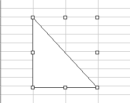
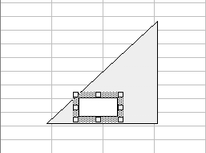

Free
computer Tutorials
|
Free
computer Tutorials
|
|
 HOME
HOME
|
Stay at Home and Learn | |||||
How to Draw a Shape on a Microsoft Excel Spreadsheet
You can draw on your spreadsheet. You can even put a picture on a spreadsheet. Sometimes a drawing can help to illustrate the data or function on the spreadsheet. The drawing in the spreadsheet below is illustrating what the function does: We'll see how to draw and format the triangle shape now. (Don't worry about all that Cosine stuff. But we'll give you the formula, just in case you want to duplicate the spreadsheet exactly.) Before you can draw shapes on your spreadsheet, you need to display the Drawing Toolbar. To display the Drawing Toolbar, do this:
The Drawing Toolbar should appear, but it might be at the bottom. It
looks like this: Click on AutoShapes to see the kind of shapes you can add to Excel. To get the triangle, do this:
 The white squares around the shape are the sizing handles. To resize your triangle, move your mouse over a white square. The pointer will change to the shape of a double-headed arrow. Hold down the left mouse button and drag. To move the triangle somewhere else, move your mouse pointer somewhere in the middle of the shape. When your mouse pointer turns into a arrow-headed cross, hold down the left mouse button and drag the shape somewhere else. Our triangle is facing the wrong way. To turn it round, do this:
To add some colour to your shape, again Right click on the shape and select Format AutoShape. This time, select the Colours and Lines tab strip. Click the down arrow of the "Fill Color" box. Choose a colour for your shape. To add the letter B to your triangle, you need to add a text box on
top of it. So, locate the Text Box tool on the Drawing Toolbar. Click
on it with your left mouse button. Position your mouse at the bottom
of your triangle. Hold down the left mouse button and drag out a text
box. Your spreadsheet will look something like this one:  Click inside the text box and type the letter B. Now click on one of the edges of the text box, somewhere near a white square. But click with your Right mouse button. A menu will pop up. When the "Format Text Box" dialogue box appears, select the Colours and Lines tab strip. Under "Line Color" set it to No Line, as in the image below: In the "Fill Color" box, set it to No Fill. Then click the OK button. Your final shape will then look like this: If you want to add the Cosine formula to the spreadsheet, it was this: =DEGREES(COS(E4 / E5)) Cell E4 will then be the input cell for the Hypotenuse, and cell E5 will be the input cell for the Adjacent.
In the final part, you'll see how to insert an image into a spreadsheet. |
||||||
|